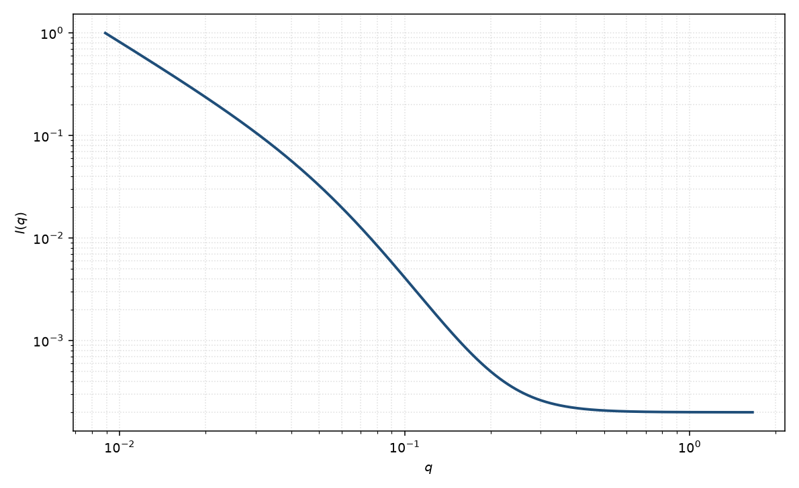

双幂律
two power law
适用场景
曲线在双对数上明显折成两段斜率、又不想引入 $R_g$ 时，用两段幂律加一个转折波矢。常见于质量分形转到表面 Porod、或棒的 $q^{-1}$ 转到截面 Guinier/Porod。
若低 $q$ 其实是 Guinier 坪，应改用 Guinier–Porod，而不是把坪误当成很缓的幂律。
物理图像
实空间若存在两个标度区，Fourier 变换在 $q_c$ 两侧给出不同指数。转折 $q_c\sim 2\pi/\xi$ 对应那个中间长度。
平滑写法用一个交叉因子，避免分段函数在 $q_c$ 处不可导。这仍不是形状模型。
示意图

核心公式
出发点
若成对相关在 $r\sim 1/q_c$ 两侧服从两套幂律（两个标度区），Fourier 变换在 $q_c$ 两侧给出两个指数。本页不引入 $R_g$，只保留转折波矢 $q_c$ 与两个有效指数。交叉因子是经验平滑，不是唯一的微观核。
推导
分段幂律 $I\sim q^{-m_1}$（$q\ll q_c$）与 $I\sim q^{-m_2}$（$q\gg q_c$）在 $q_c$ 处一般不可导。取有理交叉
$$I(q)=\frac{A}{q^{m_1}}\frac{1}{1+(q/q_c)^{m_2-m_1}}+B.$$$q/q_c\to 0$ 时分母 $\to 1$，故 $I\sim A q^{-m_1}$。$q/q_c\to\infty$ 时分母 $\sim(q/q_c)^{m_2-m_1}$，于是
$$I(q)\sim A\,q^{-m_1}(q_c/q)^{m_2-m_1}=A\,q_c^{m_2-m_1}q^{-m_2}.$$指数从 $m_1$ 连续过渡到 $m_2$，转折宽度由指数差 $m_2-m_1$ 控制。这与质量分形接到表面 Porod（$m_1=D_m$、$m_2=6-D_s$）是同一类写法。
低 $q$ 与渐近
低 $q$ 仍是幂律 $q^{-m_1}$，没有 Guinier 饱和；若数据其实有坪，应改用 Guinier–Porod。高 $q$ 渐近 $q^{-m_2}$。$q_c\sim 2\pi/\xi$ 只给出中间长度的数量级，不是晶格常数。
参数表
| 参数 | 符号 | 含义 | 单位 | 典型范围 |
|---|---|---|---|---|
| 低 $q$ 指数 | $m_1$ | 转折前有效幂律 | 无量纲 | 通常 $0$–$3$ |
| 高 $q$ 指数 | $m_2$ | 转折后有效幂律 | 无量纲 | 通常 $2$–$4$ |
| 转折波矢 | $q_c$ | 两段交叉 | Å$^{-1}$ | $0.01$–$0.2$ Å$^{-1}$ |
| 幅度 | $A$ | 前置因子 | 与强度单位一致 | 与窗口相关 |
| 标度 / 本底 | $\mathrm{scale}$, $B$ | 前置因子与常数本底 | 与强度单位一致 | 实验相关 |
拟合注意
取向：粉末棒/片的两段指数有经典值，但有限尺寸会移动 $q_c$。二维数据应分方向看斜率。
多分散把折点抹圆，使 $m_1,m_2$ 随窗口漂。磁性通道可以在不同 $q_c$ 转折。
可辨识性：四个形状参数加本底，窄窗口会退化。先用两段局部斜率估计 $m_1,m_2$，再放开 $q_c$。
相近模型
- 幂律 — 只有一段斜率时不必引入 $q_c$。
- Guinier–Porod — 低 $q$ 其实是 Guinier 而不是缓幂律。
- 质量–表面分形 — 把两段指数解释成 $D_m$ 与 $D_s$。
参考文献
- Schmidt, P. W. Small-angle scattering studies of disordered, porous and fractal systems. J. Appl. Cryst. 1991, 24, 414–435. DOI: 10.1107/S0021889891003400
- Guinier, A.; Fournet, G. Small-Angle Scattering of X-rays. Wiley: New York, 1955.